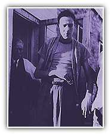

A Decorated Hero
In the meantime he was decorated for heroic achievement, receiving two Purple Hearts and a Bronze Star with Oak Leaf Cluster. To this day, he wears one of those Purple Hearts on his jacket where ever he goes. Back then the people of Russell stood by Dole both financially and spiritually. He never forgot what that help meant.
"Remember What You Still Have"
Though he had lost over 70 pounds from his hospital stays, Bob Dole still dreamed of shooting hoops and throwing a football. But his right arm was far from recovery. An old friend referred him to a doctor in Chicago, Dr. Hampar Kelikian. "Dr. K" immigrated from Armenia and had worked himself up from poverty to become a world-class neurosurgeon. He had some hard news: Dole would never again be able to use his right arm normally. Dole was devastated.
"Don't worry anymore about what you've lost," Dr. K preached. "You have to think about what you have and what you can do with it."
It took nearly three years and nine operations for Bob Dole to rehabilitate. He had to improvise ways to strengthen his withered arms, and with the loss of the use of his right hand, he had to learn to write left handed.
Dr. K never took a penny for his work. But there were other hospital bills to pay.

More opportunities. Smaller government. Stronger and safer families
Homepage | Register | Volunteers | Donations
About the Team | Dole Interactive | Newsroom | The Dole Agenda | On the Campaign Trail | Get Involved
Originally Paid for by Dole Kemp '96 Campaign Committee
Original Web Design by Presage Internet Campaigns
To Learn more about Bob Dole, Please Visit the Dole Institute
This Web Site is Presented for Educational Purposes by 4President.org